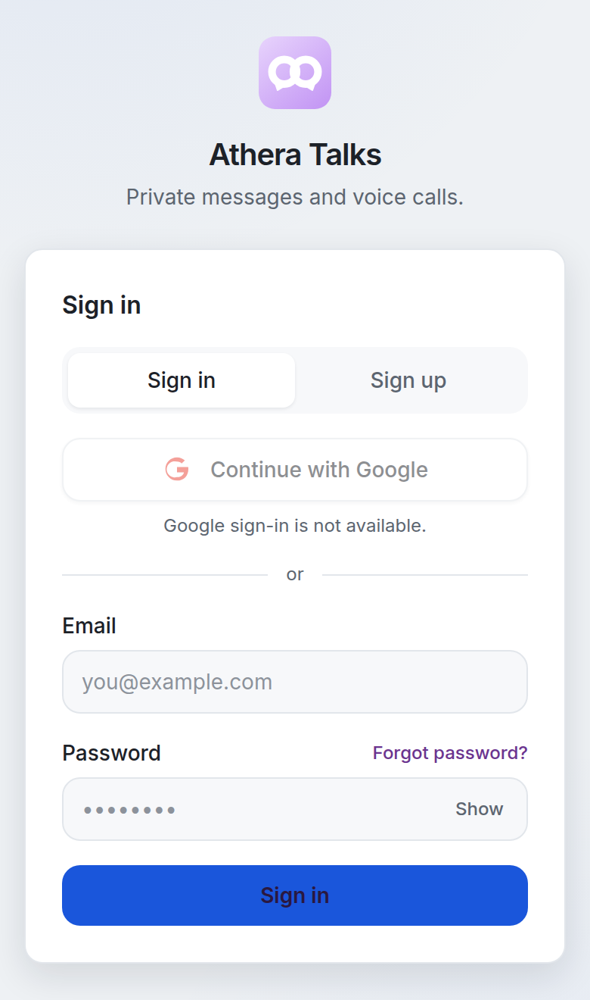

Athera Talks APK Download
Get the free Athera Talks APK and install the Athera Talks app on Android. It opens the same chat site, with private messages, voice messages, and voice calls.
Download APKVersion 1.0.0 Size 1.8 MB Updated October 19, 2026

Sign-in screen of the Athera Talks app.
About the app
Athera Talks is a chat app by Taha Ahsan. The Android app is a direct install of that site, so your account, chats, and calls stay in one place. This page is the Athera Talks APK download. It is free and it is not a Google Play listing.
- One-to-one messages with timestamps and read marks
- Voice messages you record in the chat
- Voice calls between two people who have Athera Talks open
- Usernames, profile photos, themes, and wallpapers
- Email sign-in, plus Google sign-in when it is turned on for the site
Install on Android
- Tap Download APK and wait until the file finishes.
- Open the downloaded file from your browser or the Files app.
- If Android blocks the install, allow unknown sources for the app that opened the file. On Android 8 and newer that setting is per app: Settings, Apps, Special app access, Install unknown apps, then allow your browser or Files.
- Tap Install, then open Athera Talks.
Android 7.0 or newer is required. Chrome should be installed so the app can open the site.
Read how Athera Talks handles account data in the privacy policy.